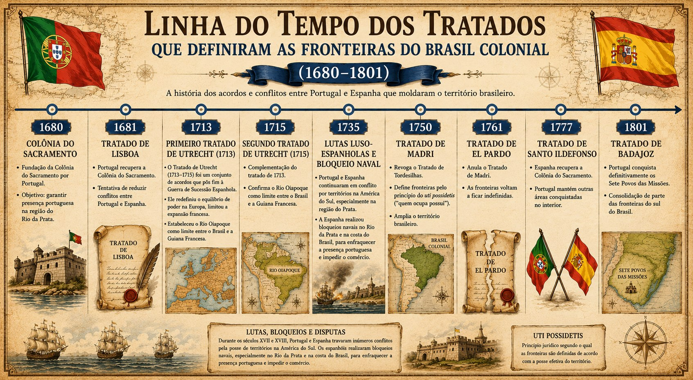
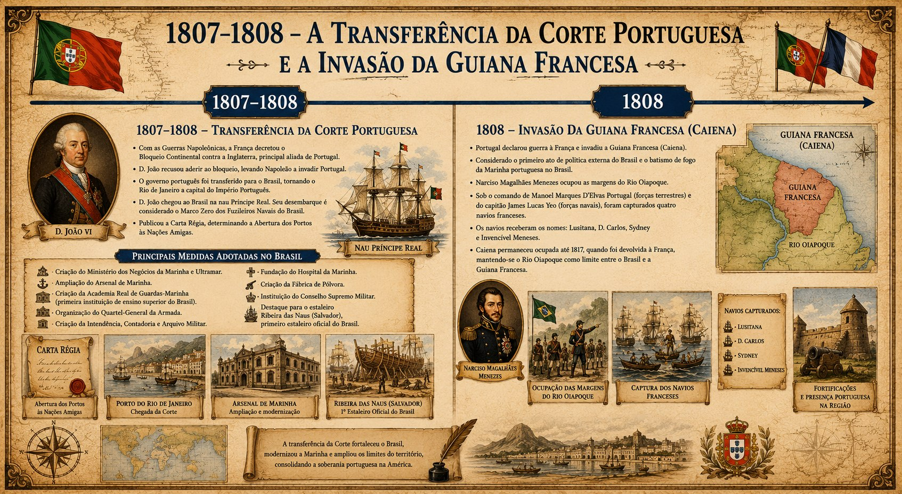
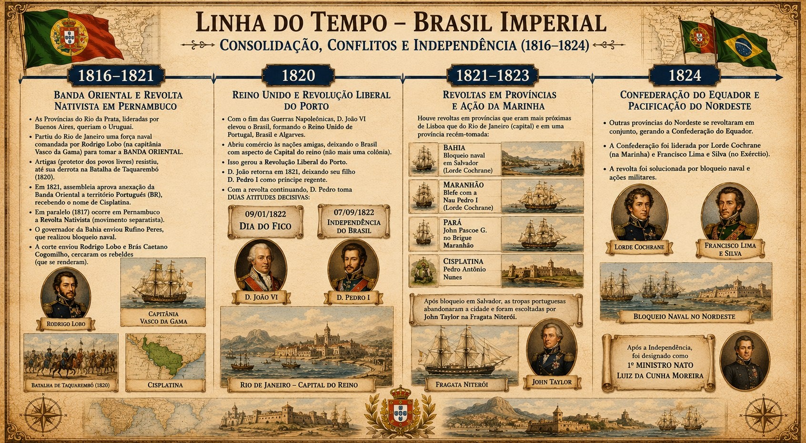
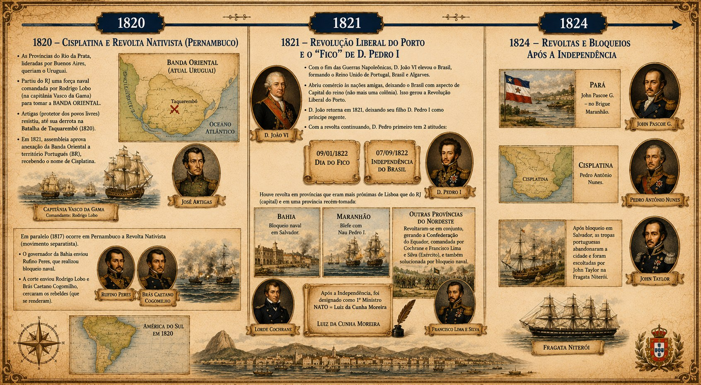

Linha do Tempo Naval Completa
Todas as batalhas e marcos, da Antiguidade Clássica até a Guerra Fria — reconstruída a partir da sua linha do tempo em fotos, da sua planilha de resumo, dos comandantes navais e dos mapas mentais da plataforma.
Para cada batalha: quem esteve envolvido (comandantes dos dois lados — o mais importante para a prova), navios, quando, onde, por quê e quem ganhou. Cartões com ⚠️ trazem uma observação ou correção em relação à sua fonte original, sem apagar o que estava escrito.
Infográficos complementares — toque em qualquer imagem para ampliar. Esse material acompanha o baralho de flashcards "Tratados, Corte Portuguesa e Independência".
Tratados que definiram as fronteiras do Brasil Colonial
1680 – 1801

Transferência da Corte Portuguesa e Invasão da Guiana Francesa
1807 – 1808

Brasil Imperial: Consolidação, Conflitos e Independência
1816 – 1824 · visão geral

Brasil Imperial — detalhe (1820, 1821 e 1824)
Cisplatina, Revolta Nativista, "Fico", Independência e revoltas provinciais
